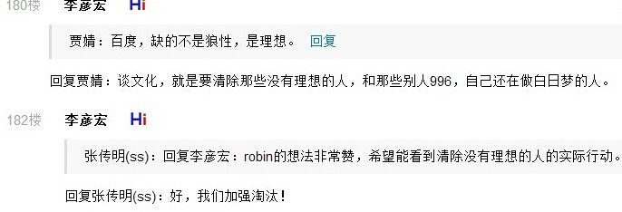

朋友负责京东某研发中心。有次加班，后半夜去我以前办公室聊天，看到几台笔记本在工位上。他说，不带电脑回家的工程师就开了吧。虽然我并不鼓励回家继续工作，但我也认为这是工程师的基本修养。我见过一个几乎全台式机的团队，不问技术细节，看产品就一培训班外包公司的水准。
回复
谢（知乎人工智障算法于首页今日头条位置醒目应景）推荐。
因为刚洗完澡精神多了，在九省通衢の煎蛋与活跃色目帐号谈笑风生，这「互联网大数据」立刻被拿走「捅妓」去了也，响应真及时吖。
 百度の企业文化
谢（知乎人工智障算法于首页今日头条位置醒目应景）推荐。
因为刚洗完澡精神多了，在九省通衢の煎蛋与活跃色目帐号谈笑风生，这「互联网大数据」立刻被拿走「捅妓」去了也，响应真及时吖。
真是学日本学的彻底，员工也应该学习日本先进经验正班摸鱼，加班干正式工
哪怕你看九省通衢の煎蛋也知道，新时代中国特色社会主义大好形势下，发源于武汉的以美术兲才为榜样的「上班摸鱼」已经成为「亚文化」了也。